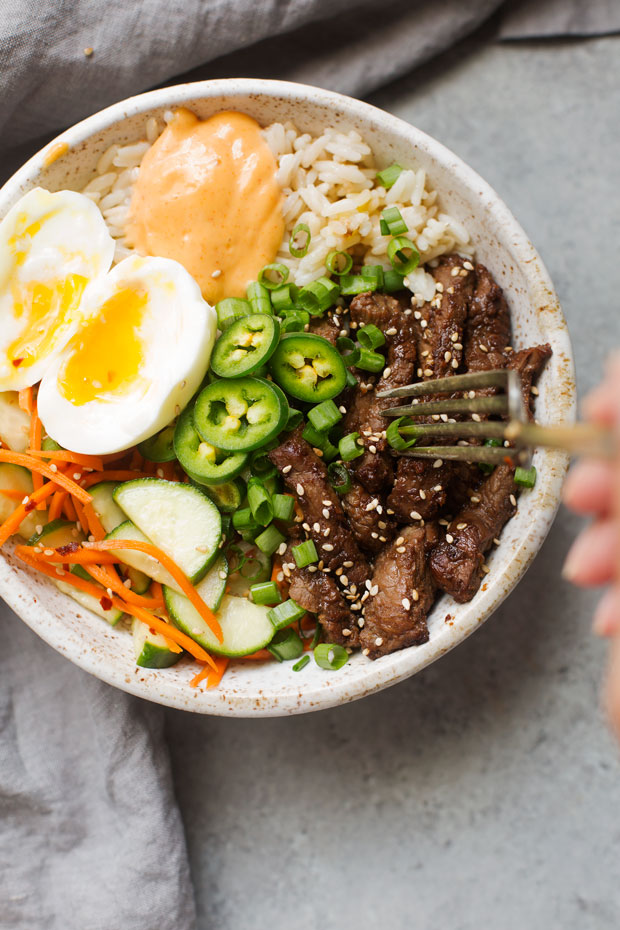
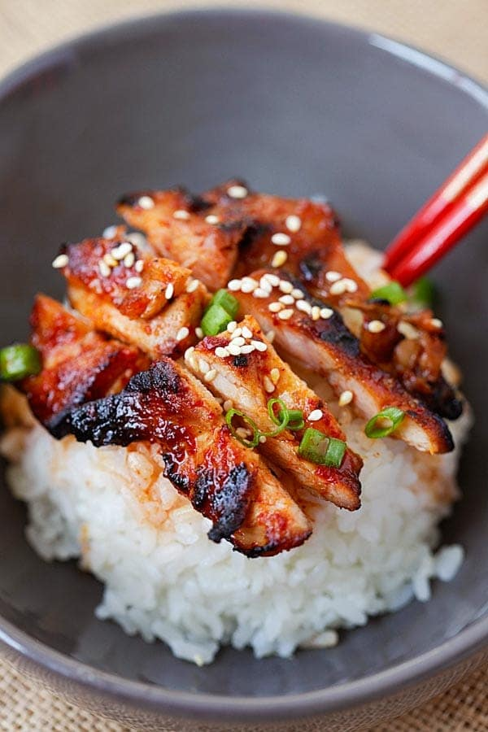

Korean Food History
Korean food changed greatly depending on the time. For example, during the three kingdoms period, cold and fermented foods such as kimchi arose, and during the Goryeo period, foods from outside were brought in, and now they are some of Korea's most popular dishes. examples of these would be dumplings, mandu, grilled meat, noodles, and the use of black pepper. During the Joseon period, technological agricultural advances were being made, and books on farming and agriculture were being made. New crops were being imported from the new world, and some were favoured, such as potatoes and sweet potatoes, as they grew in previously unused soils, and were fairly easy to cultivate. Later, when Japan colonized Korea, many of the farms were taken to support their growing population, and so many small farms were made into big ones, resulting in a bigger harvest. Rice production grew significantly to support Japan's war efforts, and Koreans ended up growing other grains to support themselves. Each Korean usually only got around to having two meals per day during the winter, and 3 during the summer. the poor, however, barely scraped by, and were only able to get around one bowl of white rice per year, and relied primarily on cheaper wheat, such as millet or barley. During the wars, even the middle class started to get affected, so they started making use of inexpensive meats and made dishes out of them. After the war passed, South Korea turned to industrial processes to help feed the nation, and the overall quality of the food has been rising. Overall, Korean cuisine has been through some harsh times but has risen up despite the hardships.
Korean Food now
Eating etiquette in Korea is relatively relaxed compared to the Chinese and Japanese; other than basic table manners, many of the "rules" aren't stressed. For example, although the oldest man of the house should get served first, many people decide against it in favour of sitting down together and talking as a family. Some rules do go beyond your run of the mill table manners, such as not talking of eating something alive, or keeping the spoons clean, as they are communal. Drinking etiquette, however, is another story altogether. It is quite significant in Korean dining, especially when drinking alcohol. The rules are as follows: Each younger man must turn away from the oldest male and cover their mouths as they drink. Drinking alcohol face to face is considered impolite, and therefore looked down upon. Guests also cannot refuse a drink when asked one time, but on the second, they are expected to politely refuse. On the third time, the guess can either deny or accept, but if they deny, they will not be asked a third time. Overall, Korean etiquette is quite relaxed when it comes to food, but drinks are another story.
Fun Facts
Koreans use metal chopsticks! Save the turtles!
Fermented food is a must for almost every Koren meal!
Like the Japanese, Koreans care a great deal about freshness, and sometimes even eat the food while it's still moving!
Bulgogi is the signature meat!
Recipes
| Name | Type |
|---|---|
| Bulgogi | Main Course |
| Yummy Korean Glass Noodles | Main Course |
| Korean Hot Wings | Appetizer |
| Korean Cucumber Salad | Appetizer |